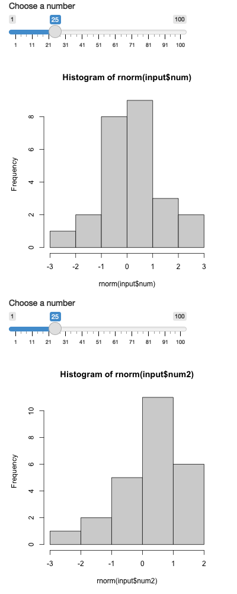

13 Shiny Applications
We will use shiny apps to create dynamic visualizations of data that can be hosted on websites or from your R console.
Challenge 1
Install shiny app:
Optional installs
Open the folder code and open 01-template.R and click run app
Run the lines there to see the structure of a shiny app.
This is the simplest version of a shiny app that can be made. It creates html to display the text and has no dynamic inputs or outputs.
Now to 02-hist-app.R
Run the lines there to see the structure of a shiny app.
Now you see inputs and output
Challenge 2
Run this shiny app. Screenshot the app.
library(shiny)
ui <- fluidPage("hello world") #This is the User Interface (ui),
# it generates html for you so you don't have to do it. Run this line by itself
# and then type ui into your console and hit enter.
#What do you see?
server <- function(input, output) {} #This is where the R code does work.
# Run this line by itself and then hit enter
#What do you see?
shinyApp(ui = ui, server = server) #This starts the app running
#>
#> Listening on http://127.0.0.1:8301#from you laptop. While it is running, you can see that it has opened
# a port to your local laptop in the console. To stop it, close the
# window or hit the stop sign.# library(shiny)
ui <- fluidPage(
sliderInput(inputId = "num", #Here you can see we set up a slider for the user
label = "Choose a number", #It has a label, which are instructions
value = 25, min = 1, max = 100), #It has a default value, a min and a max
plotOutput("hist"), #And you have to make sure to plot it
sliderInput(inputId = "num2", #Here you can see we set up a slider for the user
label = "Choose a number", #It has a label, which are instructions
value = 25, min = 1, max = 100), #It has a default value, a min and a max
plotOutput("hist2") #And you have to make sure to plot it
)
#This is what ui looks like:
# <div class="container-fluid">
# <div class="form-group shiny-input-container">
# <label class="control-label" for="num">Choose a number</label>
# <input class="js-range-slider" id="num"
# data-min="1" data-max="100" data-from="25"
# data-step="1" data-grid="true" data-grid-num="9.9"
# data-grid-snap="false" data-prettify-separator=","
# data-prettify-enabled="true" data-keyboard="true"
# data-data-type="number"/>
# </div>
# <div id="hist" class="shiny-plot-output" style="width: 100% ; height: 400px"></div>
# </div>Now for the server function. You use the previously learned R syntax to create a function. You give it the arguments input and output. Then if you have outputs, you need to save the output to “output$name” with the assignment operator <-
Challenge 3
Run this shiny app. Screenshot the app.
server <- function(input, output) { #Now we've added input and output to the arguments
output$hist <- renderPlot({ #output$hist is the saved plot, renderPlot builds it
hist(rnorm(input$num)) #This creates the histogram with information from input
})
output$hist2 <- renderPlot({ #output$hist is the saved plot, renderPlot builds it
hist(rnorm(input$num2)) #This creates the histogram with information from input
})
}
shinyApp(ui = ui, server = server)#This creates and runs the app
#>
#> Listening on http://127.0.0.1:4023
Note: the name in plotOutput() “hist” of the ui function is the same as output$hist. These are mapped together to provide the information for the graph. Also, what you save into output should be something built with a renderName() function. You can:
- renderDataTable()
- renderImage()
- renderPlot()
- renderPrint()
- renderTable()
- renderText()
- renderUI()
For outputs you have:
- plotOutput()
- textOutput()
- dataTableOutput()
- imageOutput()
- tableOutput()
- uiOutput()